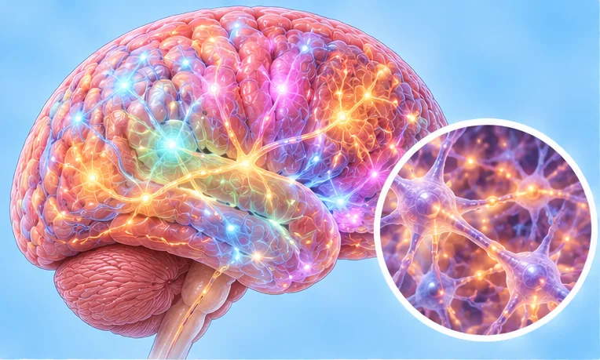

注意缺陷多动障碍
使人难以集中注意力、静坐或三思而后行的状况
这是什么
注意缺陷多动障碍是大脑处理注意力、精力和冲动方式的一种差异。它从童年开始，成年后可能持续。这不是懒惰，也不是教养不当。
- 注意力和自我控制
- 从小时候开始
- 坐不住，容易分心
- 就诊科室
- 家庭医生、儿科医生、精神科医生或心理学家
- 多发人群
- 儿童和青少年；常持续到成年
- 传染性
- 不传染
- 病程
- 常会持续到成年；规律的作息和支持对许多人有帮助
常见表现

脑子发懵、难集中注意力不集中 
容易忘事记忆力减退
其他症状
- 坐立不安、小动作多，难以静坐或等待
- 话多、爱打断别人，或做事不假思索
- 成年人：难以管理时间、工作和人际关系，或内心坐立不安
为什么会这样

病因尚未完全明确特发性
其他原因
- 大脑发育和处理注意力的方式有所不同
- 早产或出生时体重很轻，可能增加可能性
- 孕期吸烟或饮酒，或早年头部受伤，可能增加可能性
- 它不是由教养不当、懒惰或吃太多糖造成的
出现这些情况请先看医生
- 有伤害自己的念头或感到绝望：拨打999或立即去医院
- 胸痛、晕倒或心跳很快，尤其是在服用相关药物时：立即去医院
- 危险的行为，如冲上马路或反复受伤：尽快看医生
- 除了这些表现，还有强烈的悲伤、担忧、愤怒，或饮酒、使用毒品：请看医生
- 孩子在学校或家里持续数月都很吃力：请医生评估
如果有以上情况，请先看医生，再来做调理。
本页只是一般性的健康资讯。请继续按时服用平常的药物，并继续看医生。
请继续日常治疗
请继续按医嘱服药，并按时复诊。我们的调理是温和的辅助，不能代替医疗。
日常护理
- 请医生评估；儿童和成人都有相应的支持
- 建立简单的作息：睡觉、吃饭、作业或工作的时间固定
- 把大任务拆成小步骤，用清单、计时器和提醒
- 每天运动，保证睡眠充足
- 耐心对待，多称赞努力；药物问题请询问医生或药剂师
告诉理疗师
- 心脏病
- 高血压
- 癫痫或抽搐
- 怀孕
调理师会在开始前和你确认这一项。
常见问题
注意缺陷多动障碍是什么？
使人难以集中注意力、静坐或三思而后行的状况。注意缺陷多动障碍是大脑处理注意力、精力和冲动方式的一种差异。它从童年开始，成年后可能持续。这不是懒惰，也不是教养不当。
注意缺陷多动障碍有哪些常见表现？
脑子发懵、难集中；容易忘事
为什么会有注意缺陷多动障碍？
病因尚未完全明确
有注意缺陷多动障碍要怎么照顾自己？
请医生评估；儿童和成人都有相应的支持；建立简单的作息：睡觉、吃饭、作业或工作的时间固定；把大任务拆成小步骤，用清单、计时器和提醒；每天运动，保证睡眠充足；耐心对待，多称赞努力；药物问题请询问医生或药剂师
AI Body Master 的调理对注意缺陷多动障碍有帮助吗？
调理是温和的无针经络养生辅助，不能治疗或治愈注意缺陷多动障碍，也不能代替药物或医生。开始前请告诉理疗师。
相关疾病
参考资料: General information based on public health sources such as Mayo Clinic, NHS, Cleveland Clinic and NCBI StatPearls.
页面更新: 2026-11-05